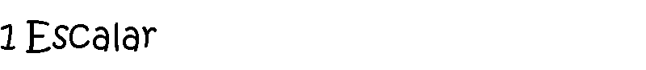
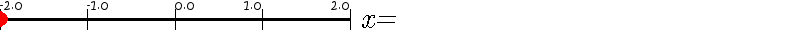
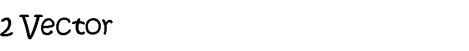
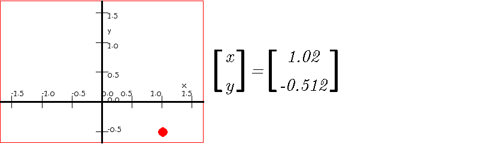
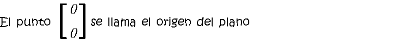
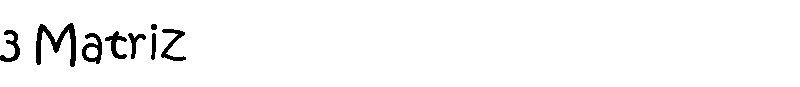
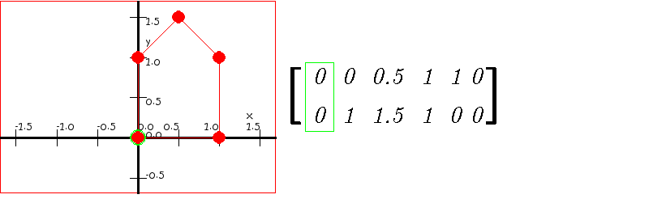

En la primera figura cada punto se representa con un número real, llamado escalar
 En la segunda figura cada punto requiere dos números reales, que se pueden escribir como un vector, el primer número representa el desplazamiento hacia la derecha y el segundo número representa el desplazamiento hacia arriba
 El punto cero cero es el origen del plano
Una lista de vectores se puede organizar en una matriz
 